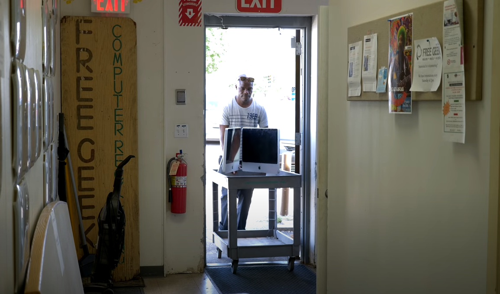
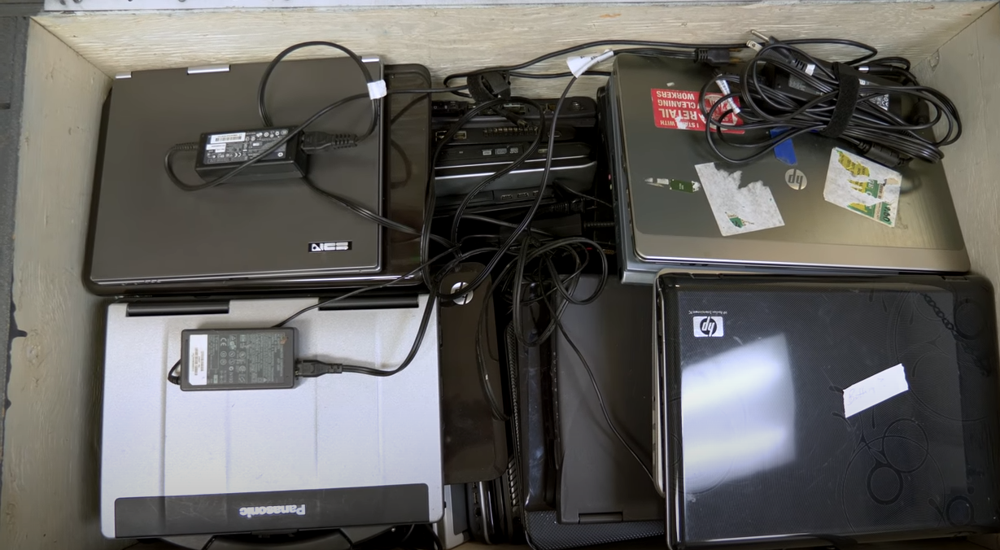
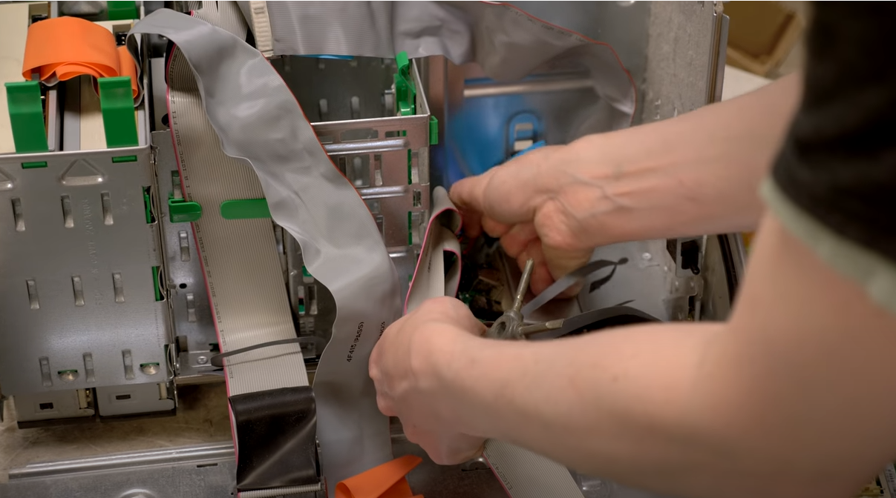
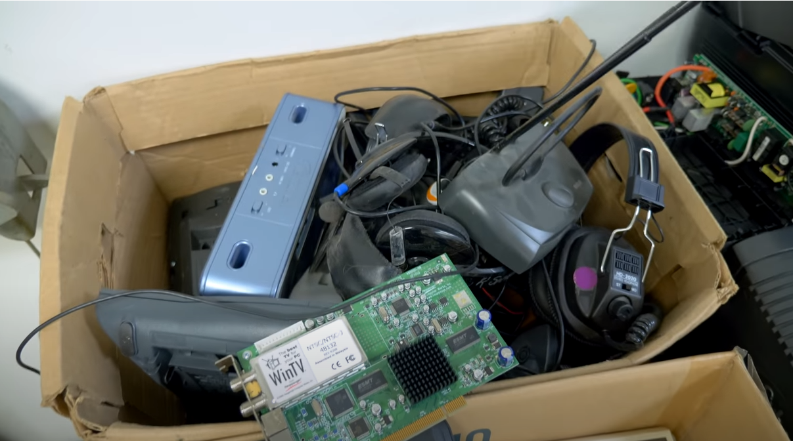
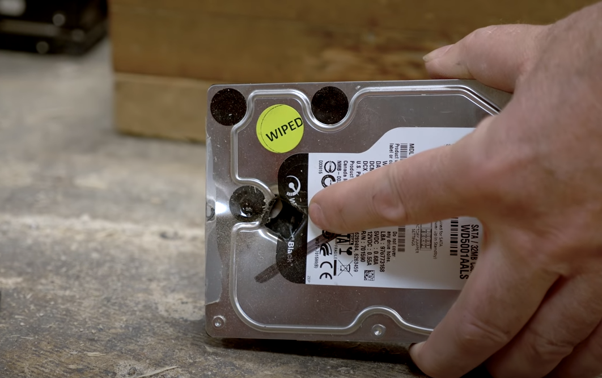

About
Free Geek is a non-profit organization that strives to help keep computers out of landfills and fixing them up to sell for low prices. Free Geek also teaches volunteers about computers and even lets volunteers earn a free computer for completing a certain number of hours of volunteer work. Free Geek also does hardware grants to other non-profits that need it. Free Geek also contributes to reducing e-waste and bridging the digital divide by "helping the needy get nerdy".
As the world gets more connected to the internet, many people may not have access to an internet-connected computer or have the knowledge to use it. Free Geek uses the donations of the broken computers and salvages their working parts to build low-cost computers for their thrift shop. Volunteers are taught about computer hardware and software as they go on the next volunteer level. Volunteers can earn thrift store credit to buy a computer. The thrift store sells internet capable computers for as little as $40.
Because of the rapid growth of technology, the community has created lots of E-waste and Free Geek is focused on getting that electronic waste and turning it into something useful or recycling it.
Refurbished laptops, destops, and individual parts are sold at the thrift shop. All refurbished computers have Linux preinstalled on them so they last even longer due to Linux being lighter on hardware. Linux is also free so it doesn't add to the cost of the computer. Laptops and desktops start at $30.
| Desktop PCs | |||
|---|---|---|---|
| CPU | Memory | Storage | Price |
| i3 | 4GB | 250GB | $30+ |
| i5 | 4GB | 250GB | $50+ |
| i7 | 8GB | 500GB | $70+ |
| Laptops | |||
|---|---|---|---|
| CPU | Memory | Storage | Price |
| Core 2 Duo | 2GB | 80GB | $30+ |
| i3 | 4GB | 250GB | $50+ |
| i5 | 4GB | 250GB | $70+ |
| i7 | 8GB | 250GB | $90+ |
Volunteer
Anyone can volunteer at Free Geek and learn about computers in a relaxed and laid back environment. Volunteers can earn a free computer for working a certain number of hours that is internet ready.
Free Geek will teach anyone willing to volunteer about how computers go together and how to use them. Free Geek also offers free tech support for the Linux machines they sell. Volunteers can
Anyone can bring unwanted electronics in for free, with a few exceptions. CRTs contain lead and are considered hazardous waste so they charge you to recycle them. Free Geek will not accept printers as they are too messy to work with and not worth the time to disassemble. If you bring in a computer with a drive, working drives will be salvaged after running Derek's Boot and Nuke (DBAN), a secure hard drive wiping tool
- 
- 
- 
- 
- 
Locations
- Athens, GA, USA (Free I.T. Athens)
- Chicago, IL (Free Geek Chicago)
- Detroit, MI (Motor City Free Geek)
- Ephrata, Pennsylvania (Free Geek Penn)
- Fayetteville, Arkansas (Free Geek Arkansas)
- Minneapolis-Saint Paul, MN (Free Geek Twin Cities)
- Oslo, Norway (Free Geek Norway)
- Toronto, ON (Free Geek Toronto)
- Vancouver, BC (Free Geek Vancouver)